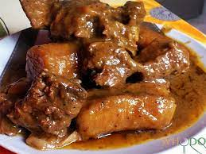

Kondrè avec la chèvre

Description
Le Kondrè est une potée de plantain, un plat qui nous vient de l'ouest du Cameroun. Elle demande des épices spécifiques mais peut aussi se faire sans elles.
Ingredients
- 2 kg viande de chèvre
- 15 doigts plantain vert
- 2 tiges poireaux
- 2 branches céléri
- 2 oignons
- basilic
- ail
- 1 sachet curry
- 3 sachets Secret Sauce Meat
- huile
- 2 bouquets garnis
Etapes
- Epluchez vos plantains et mettez-les dans une marmite au feu avec de l’eau salée et versez-y un peu d’huile et les 2 bouquets garnis, puis laissez cuire pendant 1h30 min.
- Lavez et découpez la viande, puis assaisonnez-la avec du sel. Laissez reposer.
- Faites une composition de condiments verts + oignons + curry + herbes de Provence et écrasez.
- Après 1h30 min, ajoutez aux plantains les morceaux de viande et laissez cuire 1h.
- Ensuite, versez vos condiments verts mélangés avec 3 sachets de Secret Sauce Meat, laisser cuire.